Matias Moran · Fundamentos matemáticos de la causalidad · 2° cuatrimestre 2026
100 plantas; 31 con hongo. El tratamiento se asignó al azar; el hongo apareció después.
100 plantas; 31 con hongo. El tratamiento se asignó al azar; el hongo apareció después.
IC 95% bootstrap [0.13, 1.95] cm
100 plantas; 31 con hongo. El tratamiento se asignó al azar; el hongo apareció después.
IC 95% bootstrap [0.13, 1.95] cm
100 plantas; 31 con hongo. El tratamiento se asignó al azar; el hongo apareció después.
IC 95% bootstrap [0.13, 1.95] cm
100 plantas; 31 con hongo. El tratamiento se asignó al azar; el hongo apareció después.
IC 95% bootstrap [0.13, 1.95] cm
100 plantas; 31 con hongo. El tratamiento se asignó al azar; el hongo apareció después.
IC 95% bootstrap [0.13, 1.95] cm
Un número. Todavía no una respuesta a la decisión.
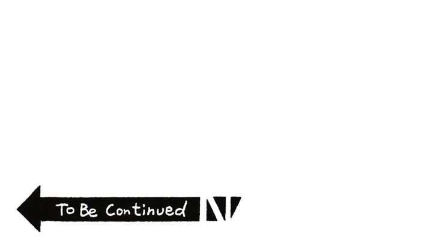
Volvemos a estas preguntas.
Tu primer tarea es decidir si es rentable fabricar los nuevos chips.
Fabrico 9 microchips. Anoto si funciona (E) o falla (F):
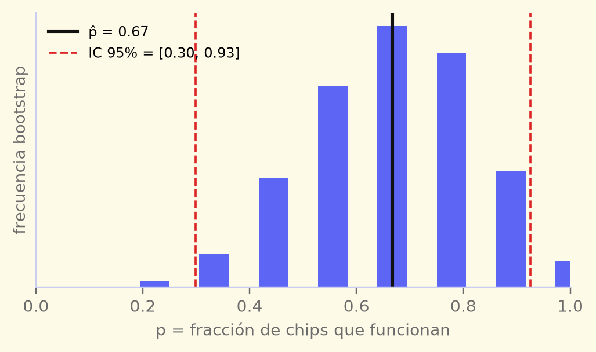
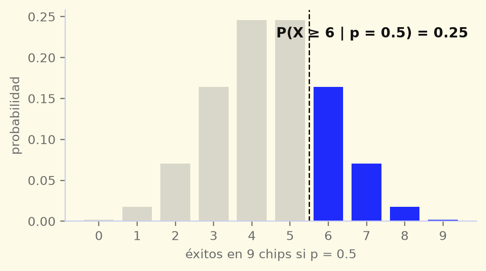
El test responde \(P(\text{datos}\mid H)\), no \(P(H\mid \text{datos})\).
Posterior \(P(H\mid D)\): lo que creés después de ver los datos.
Likelihood \(P(D\mid H)\): qué tan probables son los datos si \(H\) fuera cierto.
Prior \(P(H)\): lo que creías antes de ver los datos.
Dividimos ambos lados por \(P(D)\): la probabilidad de los datos bajo todos los modelos posibles.
Ese denominador normaliza la posterior; no cambia qué hipótesis queda mejor rankeada.
\(P(D)\) es constante una vez observados los datos: normaliza, no cambia el ranking.
La posterior es proporcional a likelihood × prior. Esa es la forma que importa para calcular.
Plano: todos los valores entre 0 y 1, igual de plausibles.
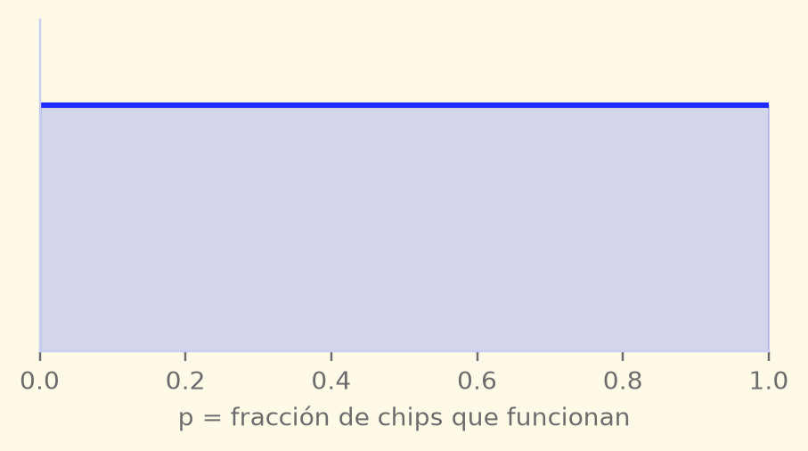
Con \(y=6\): \(p^6(1-p)^3\).
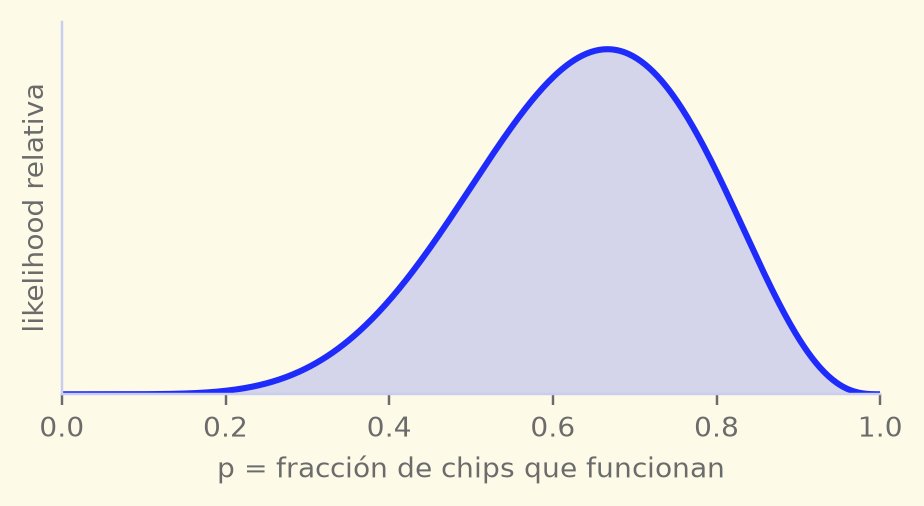
Sumar 6 éxitos y 3 fallos al prior plano.
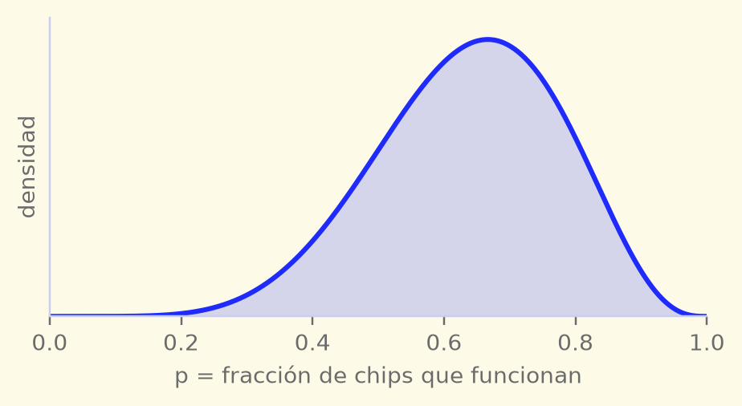
\(p\mid \text{datos}\sim \mathrm{Beta}(7,4)\) · mediana 0.64 · IC 95% [0.35, 0.88]
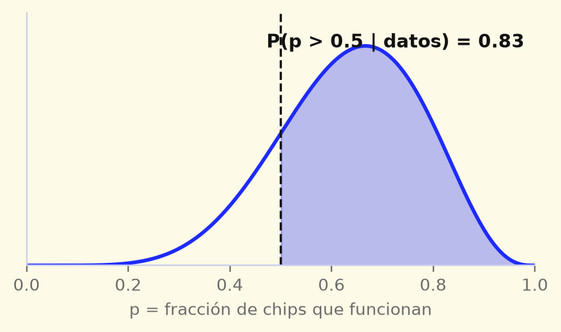
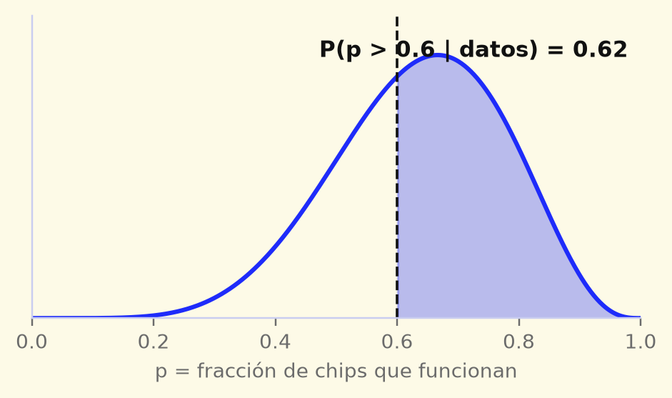
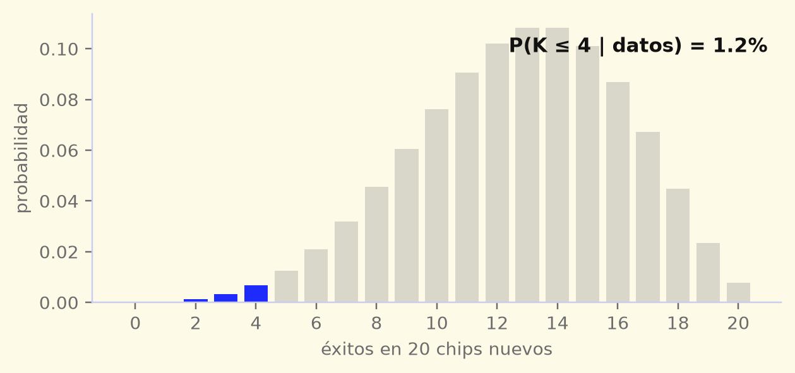
\(P(p\in[0.35,0.88]\mid \text{datos})=0.95\)
Hay 95% de probabilidad posterior de que \(p\) esté ahí.
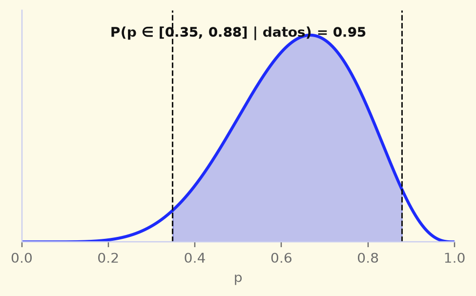
"Si repitieras el experimento muchas veces, 95% de los intervalos así construidos cubrirían el \(p\) verdadero."
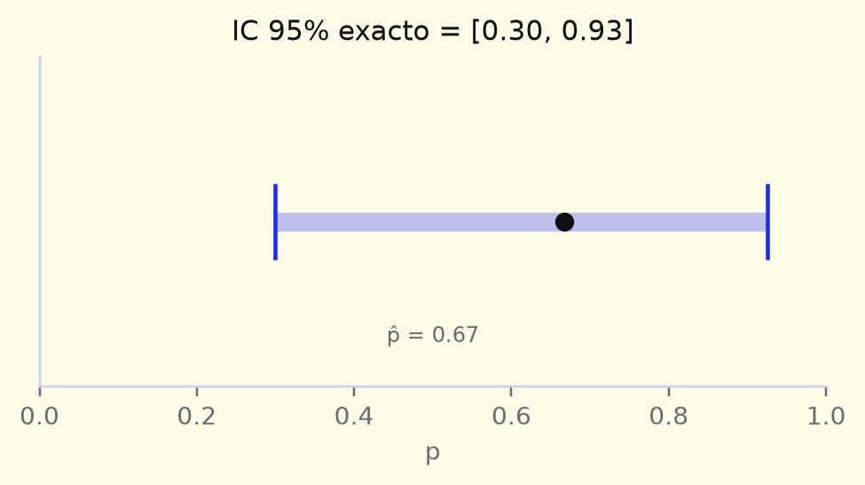
no es “significativo”.
Es evidencia.
\(P(p>0.6\mid \text{datos})=0.62\) — hay 62% de probabilidad posterior de que más de 60% funcione. La evidencia es continua. Definí "sustancial" antes de ver los datos.
“This practice provides false comfort. Reality is not so clear-cut.” — Bayes Rules!
\(\beta_T\) es el cambio promedio en altura final para una planta tratada, ajustando por altura inicial. Está en cm, así que es directamente comparable con el ATE.
\(\beta_T\) es el cambio promedio en altura final para una planta tratada, ajustando por altura inicial. Está en cm, así que es directamente comparable con el ATE.
No incluimos \(F\): es post-tratamiento y está en el camino causal.
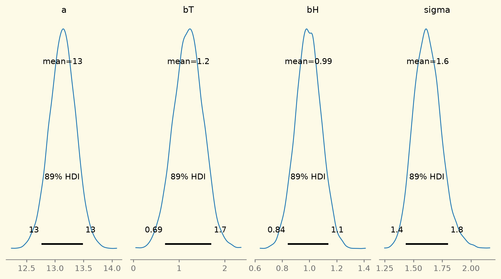
Modelo sin \(F\): \(\beta_T=1.20\ \mathrm{cm}\ [0.69,1.71]\) (89% de credibilidad).
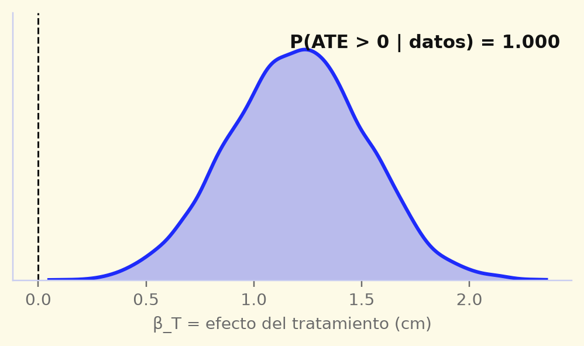
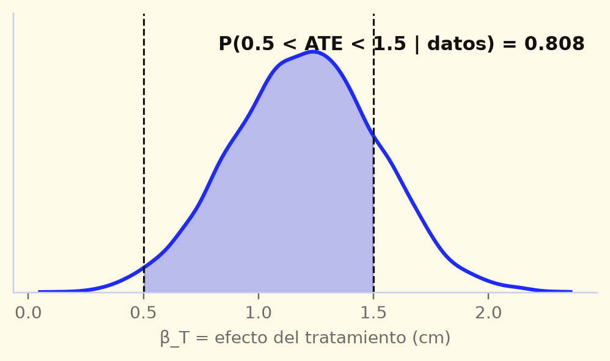
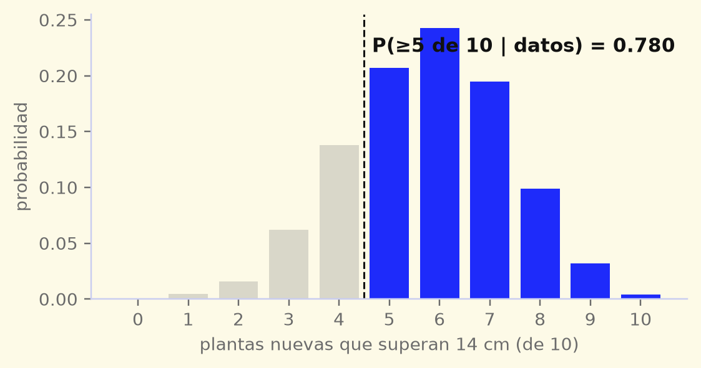
Modelo sin \(F\): \(\beta_T=1.20\ \mathrm{cm}\ [0.69,1.71]\) (89% de credibilidad).
Preguntas, objeciones, casos. Después: libros y takeaways.
Matias Moran · Fundamentos matemáticos de la causalidad
Alicia A. Johnson · Miles Q. Ott · Mine Dogucu
Richard McElreath
| Pregunta | Frecuentista sofisticado | Bayes |
|---|---|---|
| P(p > 0.5 | datos) | distribución de confianza | posterior |
| P(p > 0.6 | datos) | inferencia fiducial | posterior |
| P(≤4 éxitos en 20 | datos) | bootstrap predictivo | predictiva posterior |
| actualizar secuencialmente | diseños secuenciales de grupo | posterior secuencial |
El prior es una feature: con pocos datos, es la única forma de meter lo que sabés.
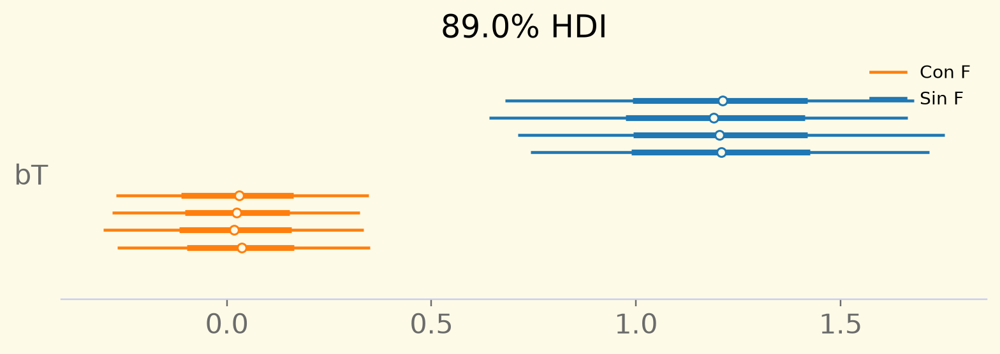
“a correct inference about the treatment still depends upon omitting the post-treatment variable.” — Statistical Rethinking